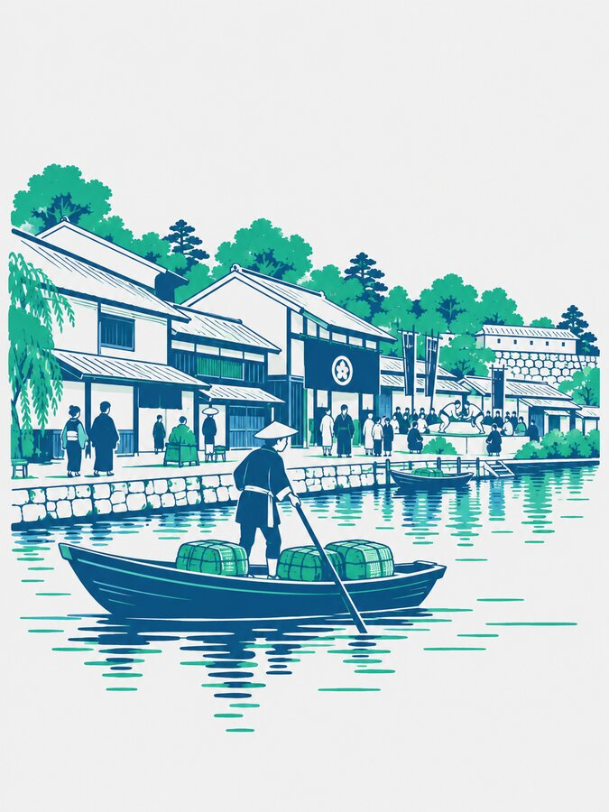
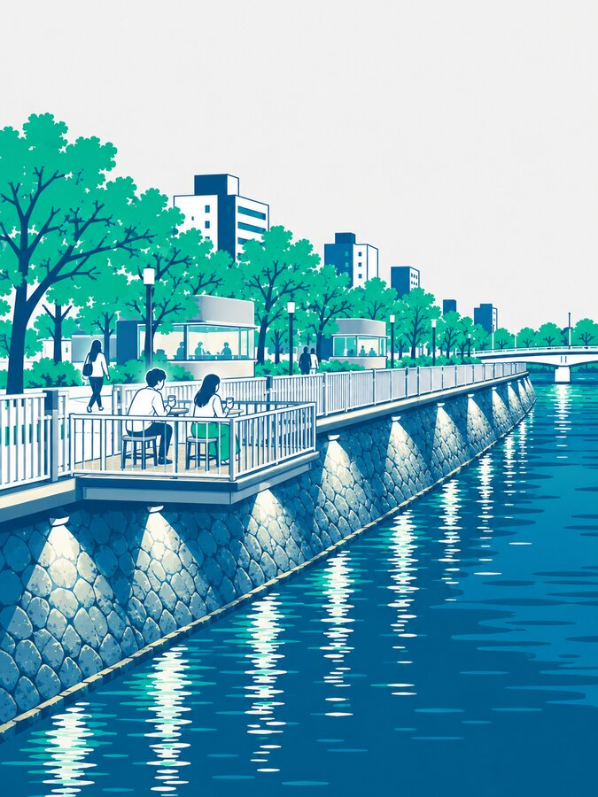
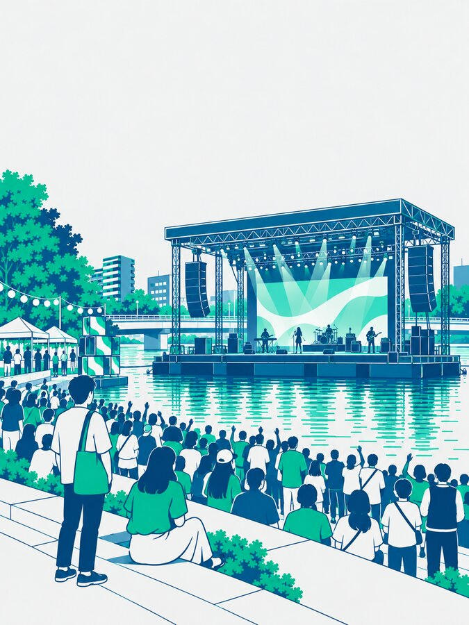

01 データが示す伸びしろ
人は来ている。
あとは、夜に留まる理由。
2,441万人
福岡市の入込観光客数（2024）2年連続で過去最高。外国人入国者も433万人（2025）で過去最高
75%
そのうち日帰り客宿泊につながれば、滞在と消費は大きく伸びる
1割未満
ライトアップ単体のイベントの県外客地方の事例で県外7.9〜8%、大規模イルミネーションでも国外客0.4%。光は「目的」になりにくい
整った景観に、夜を過ごす「目的」を重ねる要項の目的「滞在時間の増加と消費拡大」に直結
02 那珂川の可能性
夜の舞台になる条件は、
すでにそろっている。

水辺に賑わいを生んだ記憶
黒田藩の時代、那珂川の水辺には芝居や相撲が呼び込まれ、福岡と博多をつなぐ賑わいが生まれた

川に開かれたまちへ、整備が完了
リバーフロントNEXTのもと、清流公園が再整備され、護岸・橋梁のライトアップが完成する

水上の舞台は、街の象徴になれる
海外では湖上ステージの音楽祭が、常設でなくても街を代表する景観になっている（ブレゲンツ音楽祭）
ライトアップを「背景」に、川の上に「目的」をつくる市の整備を、人を呼ぶ体験に変える
03 コンセプト
土台に「舞台」を加え、
文化景観を育てる。
景観｜那珂川にすでにある土台
自然都市景観水辺の賑わいの歴史・清流公園の再整備・ライトアップ×
目的｜本事業が加えるもの
作り手が集う舞台・文化川の上のステージ・人を呼ぶアーティスト＝
目指す姿
文化景観人が集い、遊び、撮り、語り継ぐ、福岡を象徴する景色滞在夜まで留まる
消費体験にお金が落ちる
ブランド面白いことが
生まれる川
生まれる川